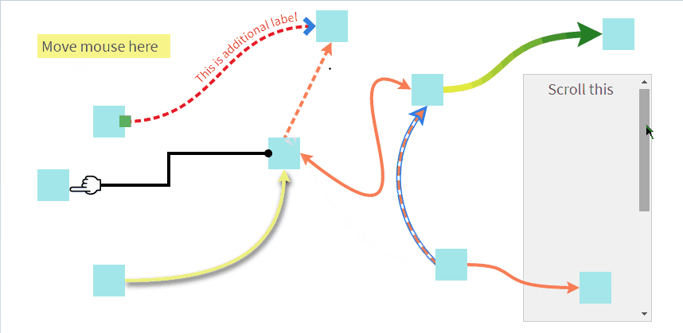

之前看到一篇推荐Magi这个搜索引擎的新闻，对于这个搜索引擎是否好用咱们不予置评，但是我在这个搜索引擎上面发现了一个好玩的前端功能。
如上图，将鼠标浮动到学习来源上时，会展示一堆指引线。
本博客的右侧文章目录也集成了这个功能，诸位可以玩一玩。
当时觉得这个功能很好玩，而且前端领域其实这种指引线还是有很多用处的，比如新手指引，功能指引，脑图之类的功能。
鉴于以后很可能需要用到，当时就调试了一下这个网站，发现使用了leader-line这个库。
然后百度了一下，发现网上也没什么人介绍这个库，所以这里写个安利文吧。
这个库在Github上的介绍很简单：
Draw a leader line in your web page.意思就是在网页上画指引线。
使用起来也非常方便：
<script src="leader-line.min.js"></script>
<script>
new LeaderLine(
document.getElementById('start'),
document.getElementById('end')
);
</script>new一个LeaderLine对象即可，只需要输入两个dom元素节点而已。
当然也可以输入更多的参数来绘制各种各样的指引线：

具体的使用方法可以去查看lead-line的Github地址，这里就不赘述了。
而且这个库本身就提供了hover绘制指引线的功能，并且能偏移起始点和结束点的位置，同时当起始点和结束点变动时，也可以实时调整指引线。
这两个功能可以将鼠标hover到右侧的文章目录上，然后滚动鼠标轮来查看效果。
这个库的实现原理其实很简单，根据提供的两个dom元素，找到这两个dom元素的位置，然后通过svg在body下绘制一条指引线。
这个库虽然只是个js，但是在引入后会将一些样式写到一个id为leader-line-defs的svg元素内。
这些指引线使用了一个叫leader-line的样式class，如果绘制指引线时出现遮挡情况，可以通过调整这个样式class的z-index或者position来处理。
可以预想一下，这些指引线都是position:absolute的，因为position:fixed的元素在滚动时肯定会存在问题。
原理都讲了，所以诸位请在页面有fixed元素或者absolute元素时，仔细查看指引线是否会与这些元素产生遮挡。
这里就以我博客右侧目录集成的指引线功能作为示例代码：
// 生成目录上的指引线
function createCatalogLeaderLine($h2Arr) { // $h2Arr是一个dom元素集合，注意不是数组哦
// lines的目的是为了保留leader-line变量，方便重绘
var lines = {};
var options = {
color: '#5bf', // 指引线颜色
endPlug: "disc", // 指引线结束点的样式
size: 2, // 线条尺寸
startSocket: "left", //在指引线开始的地方从元素左侧开始
endSocket: "right", //在指引线开始的地方从元素右侧结束
hide:true // 绘制时隐藏，默认为false，在初始化时可能会出现闪烁的线条
};
[].slice.call($h2Arr).forEach(function (item) {
var anchor = LeaderLine.mouseHoverAnchor(document.getElementById('catalog' + item.id), 'draw', {
// 指引线动效
animOptions: {
duration: 500
},
// 清除默认的hover样式
hoverStyle:{
backgroundColor: null
},
// 起始点样式，这里为了清除默认样式
style: {
paddingTop: null,
paddingRight: null,
paddingBottom: null,
paddingLeft: null,
cursor: null,
backgroundColor: null,
backgroundImage: null,
backgroundSize: null,
backgroundPosition: null,
backgroundRepeat: null
},
// 当起始点被hover时调用的事件
onSwitch: function (event) {
var line = lines[item.id]
// 浮动上去就重绘
if (event.type == "mouseenter") {
line.position();
}
}
});
lines[item.id] = new LeaderLine(
anchor,
document.getElementById(item.id),
options
);
})
// 滚动时重绘指引线
$(window).scroll(function () {
for (var key in lines) {
lines[key].position()
}
})
}其中LeaderLine.mouseHoverAnchor为leader-line提供的api，顾名思义即可。
代码就不讲了，关键点都有注释。
没什么好总结的，这里发一个小吐槽。
其实我博客集成这个功能时，最开始是直接把这个库的js复制粘贴到了博客园的自定义js代码中，没想到博客园这方面做了大小限制。
所以我就把Magi这个搜索引擎的引用地址拿来用了，万一哪天这个搜索引擎不能用了或者js地址变了那么我目录的指引功能可能就挂了。
N年之后你看到这篇文章，也许功能失效了，到时候别忘了给我发个短消息提醒我一下。